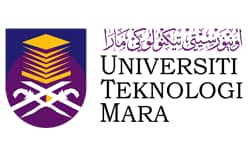
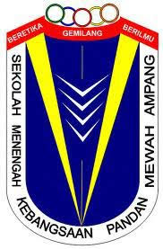
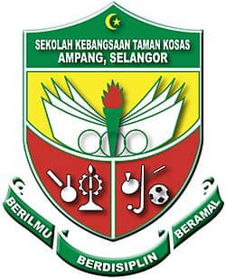
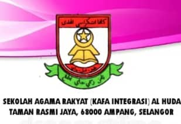

- Education
My educational journey reflects a strong foundation in both academic excellence and Islamic education, with a focus on library science, social studies, and science. I am grateful for the learning experiences that shaped my discipline, curiosity, and commitment.
| Logo | Year | Institution | Qualification |
|---|---|---|---|
|  | 2024 – 2027 | Universiti Teknologi MARA (UiTM), Puncak Perdana | Degree in Library Management with Honours |
|  | 2022 – 2024 | SMK Pandan Mewah | STPM (Social Science) & MUET |
 |
2017 – 2022 | SMK Bandar Baru Ampang | SPM & PT3 (Science Stream) |
|  | 2011 – 2016 | SK Taman Kosas | UPSR |
|  | 2011 – 2016 | KAFA Al-Huda, Taman Rasmi Jaya | UPKK & PSRA |